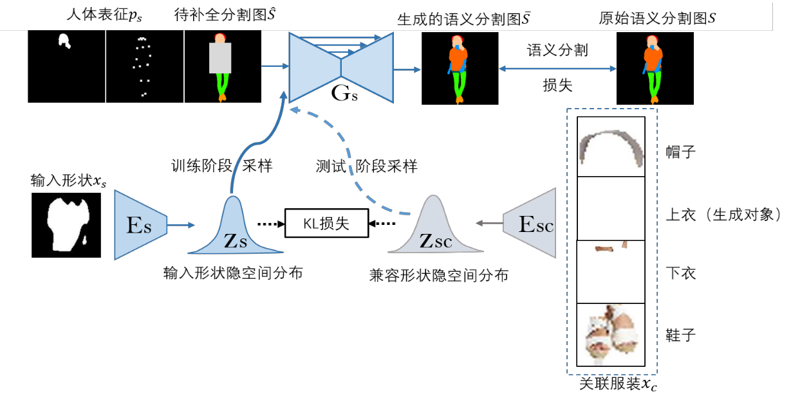
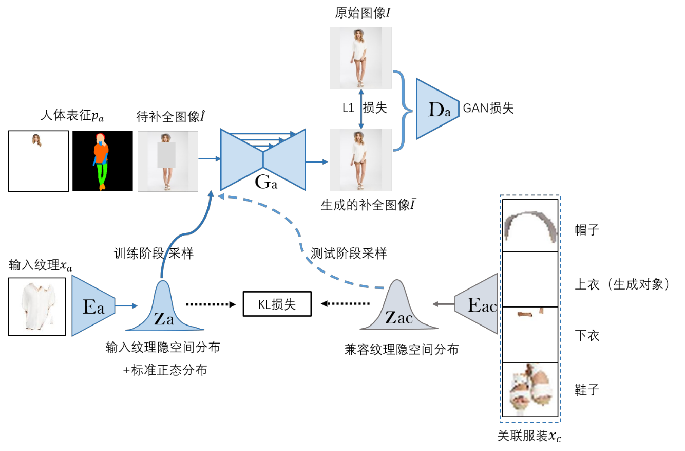
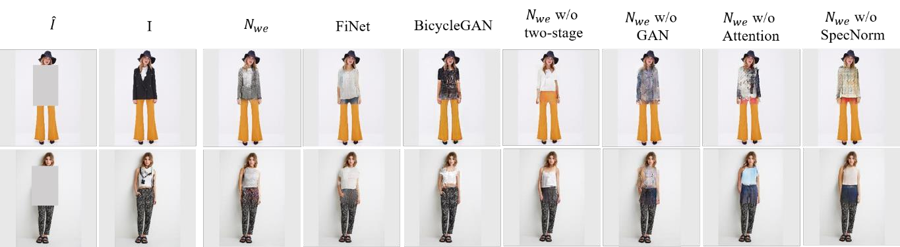
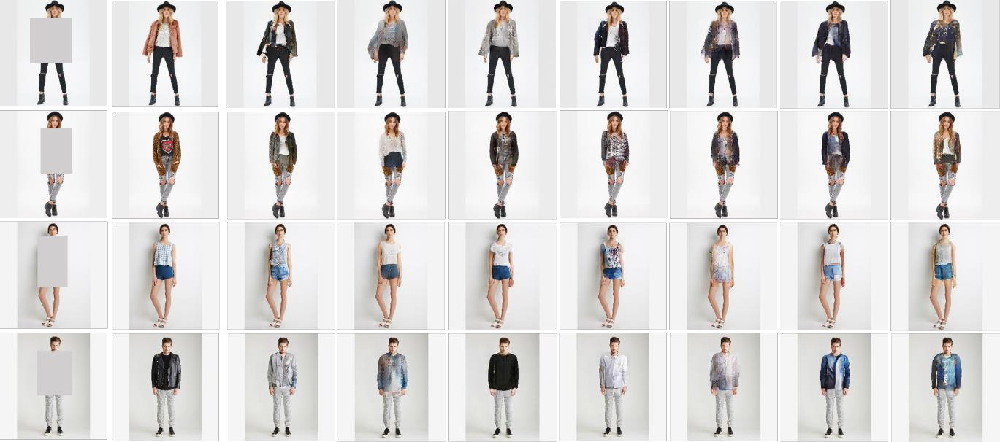

{{ page.title }}


|
Abstract
In this work, we transform the virtual try-on mission into a fashion image
completion task. That is, given a portrait missing a piece of clothing, we want to
generate a complete fashion image with high realism, diversity and compatibility. By
proposing a two-stage fashion image completion network, we divide the generation
process into two sub-processes: shape generation and texture synthesis, which realize
hierarchical control of shape and texture, and improve the realism of the generated
image. In each sub-process, we use the idea of Variational Autoencoder: map the control
information to the latent space and then utilize the random sampling to realize the
variety of generated images. At the same time, we introduce two interrelated encoders to
explicitly control the compatibility among clothing items. In addition, we use methods
such as generative adversarial networks, attention mechanism, and spectral
normalization to further improve the quality of generated images and stabilize the
training process. We test our model on DeepFashion dataset and compare our model
with other similar work, the result of which confirm that our model has excellent
performance in the fashion image completion task.
|
Bachelor Thesis: [PDF] Code: [GitHub]
|
Experiment Results


Comparison of different image generation methods and ablation test.